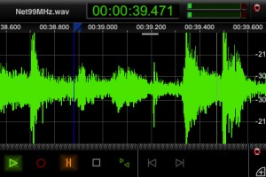

What do we have here, it’s a tidy looking DAW that fits in the palm of your hand. At $1.99, I urge everyone to at least give it a try.
microDAW is an audio playback, recording, and editing app specifically designed to capture the time-honored feel users expect in Digital Audio Workstations (DAW). One of our primary design goals is to provide the user with a familiar DAW environment, while exploiting and incorporating interface paradigms particular to the iPhone to augment the “take it anywhere-DAW” experience. Expect the [un]expected!
Features
– CD quality sampling rate of 44.1 kHz at 16 bit (mono at the moment)
– Various view options to maximize view of waveform – choice to use almost “entire” iPhone screen for audio track
– Grid on/off
– Auto scrolling during playback/record
– Navigate to any point in the audio track instantly
– Region selection via double tap and drag
– Smooth zoom in/out using pinching gestures (amplitude and time)
– Zooms down to sample level precision and quick double-tap zoom out to full waveform view
– Basic audio editing capabilities including fade-in/out, cut/copy/paste, undo/redo
– Input and output gain controls with VU meter
– Transport bar
– Transport bar with play, record, pause, stop, loop, start, end
– Audio meters with clipping indicator and peak-level hold
– Open, save, rename audio files
– File list with custom notes
– Quick-listen with slider in file list
– Concept of multiple “sessions” for a given audio file
– Session list
– Session bounce to audio file
– WiFi sync for downloading to computer
– Comprehensive help menu
Grab further details at the developer’s site – http://www.suitecat.com/
Grab microDAW now – 


{kind=link}
{kind=link}
{kind=link}